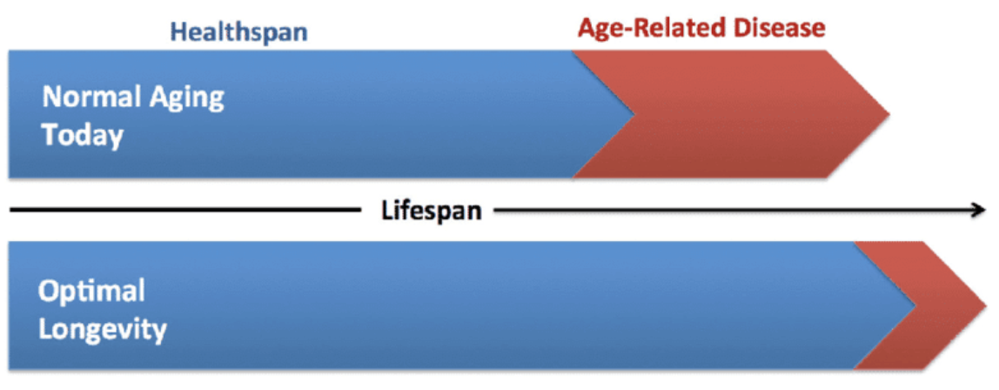

Health span increases allow the elderly to live younger, more vibrant lives
As we age, we experience more of the burden of age-related diseases. To explore this, we must distinguish between two popular terms: lifespan and healthspan. Lifespan is the time between birth and death, whereas healthspan is the time between birth and the point at which one or more currently incurable health problems of old age become significantly debilitating. Both terms can be used to refer to a single individual or to a population.
As we work to address the fundamental causes of aging, we’ll make the fastest initial progress by increasing healthspan though small molecule, cellular, and genetic approaches to address age-related diseases and frailty. Over the coming decade we’ll develop new medicines that will allow people to remain healthier and more vigorous into advanced age.
You can learn much more about ageing in our blog post on the science of aging.